给你的深度体检报告：小芽离“真正好用的洛手教练”还差什么
日期：2026-09-28。审阅对象：dsh 进度报告、旧计划、当前代码和 localhost 实际页面。当前代码版本：2bd5711。本报告中的截图均为本次实测，不是效果图。
1. 先说结论
现在有一个值得继续做的原型，但还不能说已经做出了真正能嵌入、可靠好用的洛手 AI coach。 主要障碍不是模型不够大，也不是缺少更多页面，而是：小芽拿不到正确的当前信息；培养、配队、战斗各自读不同的数据；模拟器能运行的范围被说得过于可靠；测试通过与玩家实际好用之间没有接起来。
我建议下一阶段把主目标收窄为：玩家正在看迪莫时，小芽知道这是哪一只；能解释它的培养选择，生成包含迪莫的完整六只队伍，帮助完成一局训练，复盘一个具体错误，再检查下一局有没有改进。 这个闭环做好，比增加几百个“可上场”标签、继续训练更大模型，更能支撑面试。
已有基础应保留：精灵资料、技能查询、六只配队、模拟战斗、局末复盘、工具调用和信息边界。真正需要重做的是它们之间的连接和用户看到的结论。
2. 我实际检查了什么，结论有多确定
我检查了首页、小芽独立聊天、培养页的小芽弹窗、精灵列表和迪莫详情、性格与天分刷新、技能编辑、六只配队、阵容评估、对战建议、三回合行动和投降后的复盘。保存了 28 张截图和部分页面文字、测试日志、运行时支持情况。
测试开始时模型未连接，后来服务显示 DeepSeek 已连接且通过验证，我重测了天气、属性、六只配队、当前精灵识别和练习题。没有读取或修改密钥。离线和联网问题在下面分开说，不能把所有失败都归咎于没连模型。
另外，选定的 38 项上下文、公平性、教学和适配器测试通过。另一组涉及写入仓库临时文件的 3 项测试被本机目录权限拦住，不作为产品失败。没有重新跑完整发布套件，没有拿到真实游戏接入结果，也没有真人学习效果数据。因此本报告不编造“通过率”“提升百分比”或当前真实游戏胜率。
3. 小芽：联网后有所改善，但还没有达到预期
| 我问或操作了什么 | 实测结果 | 我的判断 |
|---|
| 当前有多少精灵 | 可以给出数量相关回答 | 只能证明简单查询的一部分，不能证明能处理六只配队 |
| 天气有什么作用 | 离线时转到旧对局；联网后能解释天气 | 联网路径有用，离线处理路径明显不可靠 |
| 火系克制什么 | 离线要求进入 PVE；联网后回答属性关系 | 基础资料不应该依赖是否连上大模型 |
| 以迪莫为核心配六只，每只四技能 | 返回旧狐狸、狮子一类的战术内容，没有完整六只和 24 个技能 | 核心任务失败，不能靠改措辞解决 |
| 在迪莫详情问“我现在看的这只叫什么，适合什么性格” | 没有识别当前迪莫，转成旧对局回顾并提示回答不合适 | 小芽没有真正嵌进培养场景 |
| 练习题涉及喵喵速度 | 离线与联网均无法取得需要的资料 | 教学入口存在，基础教学链没通 |
| 对战问建议 | 能给出换火神等行动，但理由薄弱 | 部分有用，需要说明为何、条件和替代选择 |
| 迪莫剩 2% 血，再行动后倒下 | 本次未看到行动前的有效危险提醒；倒下后提示“留到局后看”，还显示 cooldown | 主动教练价值没有体现；仅此一局不足以判断所有场景 |
| 投降后复盘 | 能指出迪莫第 3 回合倒下，并给下一局练习 | 有闭环雏形，但把“吃过克制伤害就换”说得过于绝对 |
问题一：用户问洛手，小芽却回答旧项目的对局
这不是一个小小的文案问题。玩家会立即怀疑：它到底懂不懂我玩的游戏？旧资料、旧对局和当前场景必须分开。当前游戏的信息查不到时，应清楚告诉玩家缺哪项，而不是拿别的游戏内容顶上。
建议： 所有问题先确认“这是洛手的哪种场景”；资料和记忆只能使用该游戏、该规则版本的内容。基础属性、技能、速度查询统一走同一个资料服务。联网与离线都能查已存在的资料；只有需要模型组织语言和推理的部分才依赖模型。
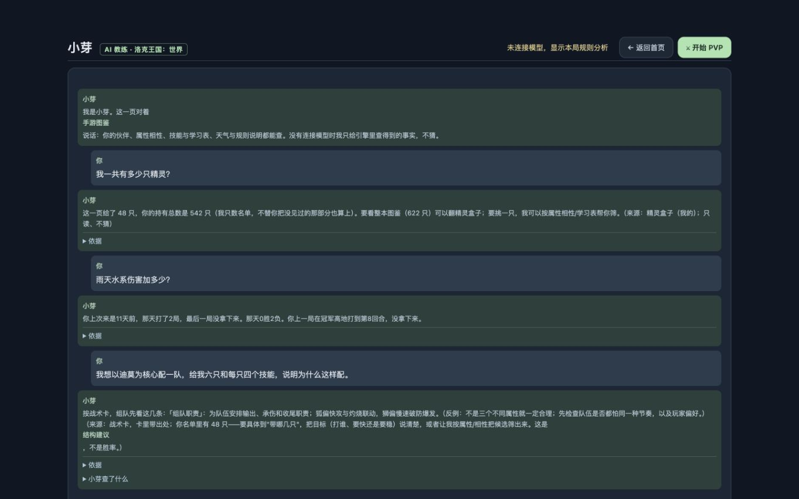
六只配队请求没有得到完整队伍 · 点击查看原图
上图：我要求围绕迪莫配队，收到的却是旧战术内容。下面是联网后正常解释天气的对照，说明“完全不能回答”和“核心任务没接通”需要区别处理。
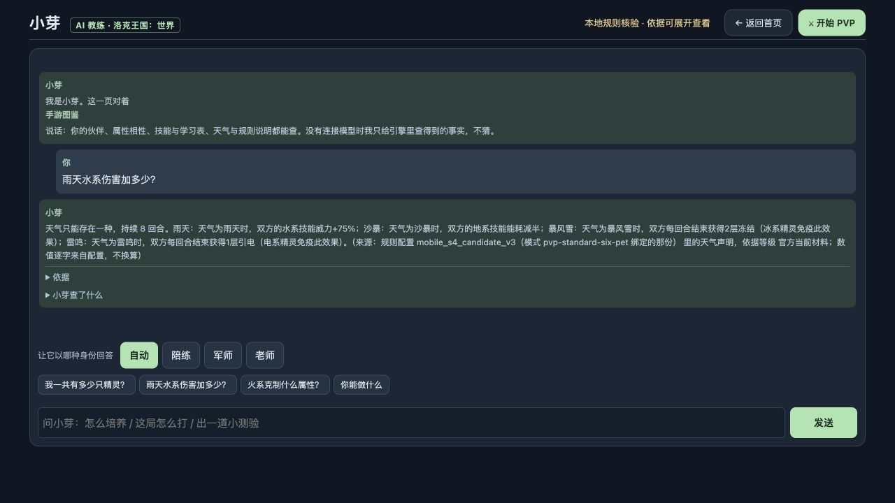
联网后能解释天气 · 点击查看原图
问题二：培养页里的小芽不知道我正在看迪莫
真正嵌入，不是每页加一个“小芽”按钮。小芽应知道当前精灵、当前性格天分、四个技能、玩家已有的队伍，以及刚刚改了什么。目前弹窗拿不到这条完整信息，独立聊天又默认拿列表的第一只来当关注对象。
建议： 打开迪莫页就显示“正在看：迪莫”；刷新性格后立刻带上新值；切到配队页就带上六只和锁定条件；进入战斗就带上当前回合。小芽的第一句话应该是“这只迪莫现在……，如果你想让它承担……，建议……”，理由来自这只精灵的实际资料。无法核验某个作用时，直接说明那一部分尚未确认。
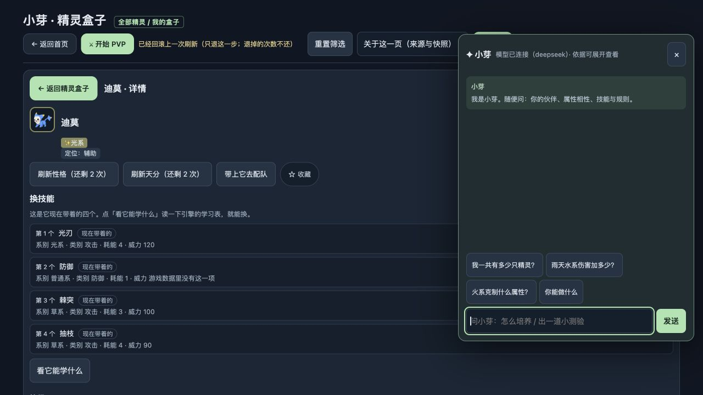
迪莫详情中的小芽弹窗 · 点击查看原图
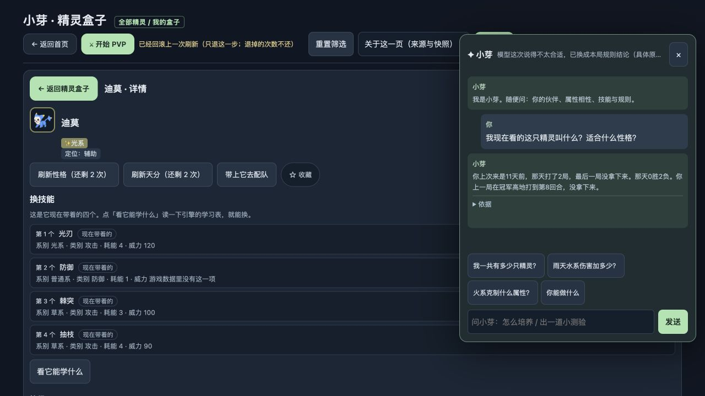
询问当前精灵却得到旧对局内容 · 点击查看原图
问题三：练习题有外壳，没有可靠地读取教学需要的事实
“问玩家问题”本身不等于教学。连喵喵的速度都读不到，就无法稳定判断答案，也无法解释错在哪里。
建议： 先把三种练习做扎实：属性关系、可观察的速度关系、一次换人决策。每道题先确认题目所需资料可读、标准答案可核验，才出题。不要用玩家答题来掩盖资料不足；玩家不会回答时，可以给提示、展示一次推理，再用不同局面检查理解。
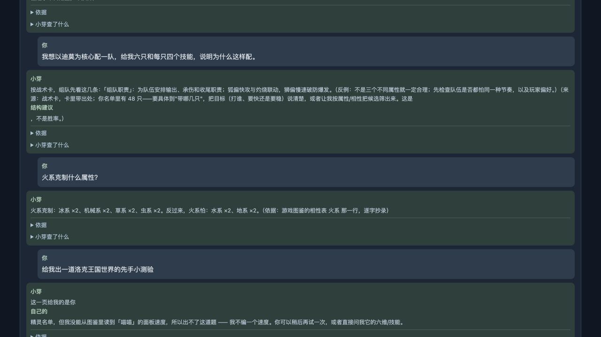
联网后练习题仍无法读取所需资料 · 点击查看原图
问题四：主动提醒和复盘应有“教练的判断”，而不是泛泛提醒
本次迪莫换入后承受约 415 点伤害，只剩 10/425 生命；再行动后倒下。此时事后说“先按你的判断走”帮助很小，显示 cooldown 更是把内部词直接抛给玩家。
建议： 能确认危险时，用一句话提醒关键事实，例如“迪莫只剩 10 点生命，继续留场风险很高；先比较换火神与防御”。如果仍无法确定敌方下一招，就说“若对手继续进攻”，不要保证必死或必胜。决定把内容留到复盘时，应该安静记录，不要弹一个没有行动价值的通知。
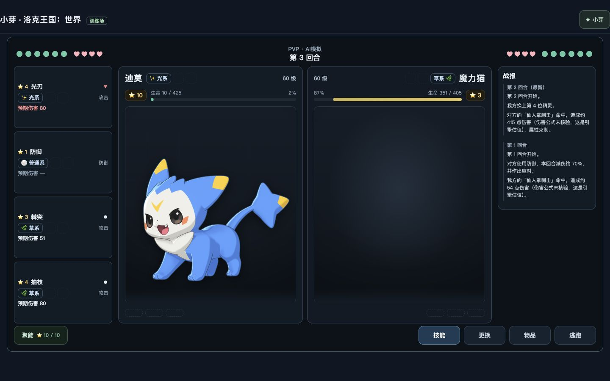
迪莫处于极低生命的局面 · 点击查看原图
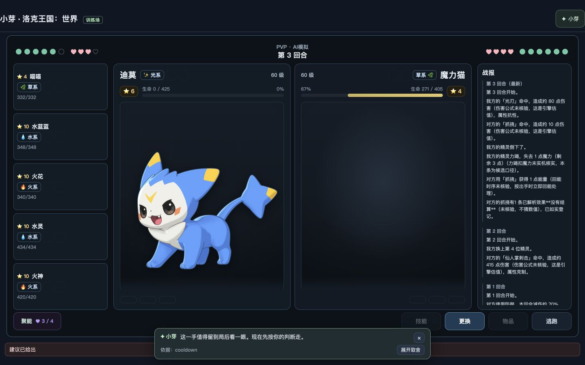
倒下后的提醒没有提供具体帮助 · 点击查看原图
复盘已经比聊天更接近你的目标：能把事件串起来，选一个练习点。但“吃到属性克制后下一回合就换”不是普遍正确的规则。应比较剩余生命、能量、可换精灵、换入要承受的伤害和对手的公开信息，教玩家为什么这个局面值得换。
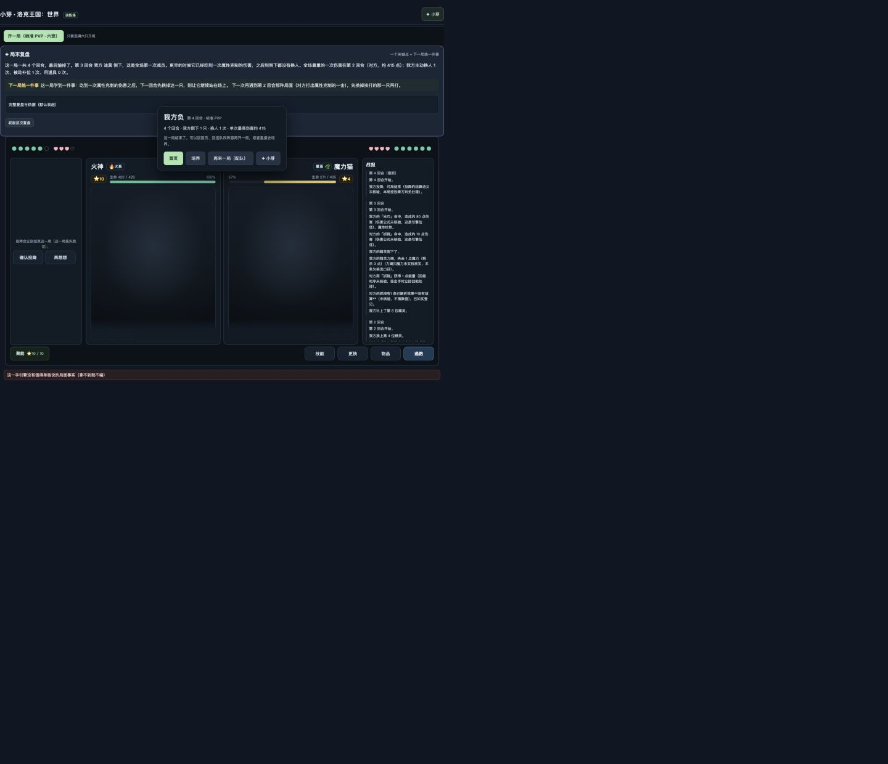
本次投降后生成的复盘 · 点击查看原图
下一局验收： 重现类似但不完全相同的局面，观察玩家能否说出风险并做出有理由的选择。只是复述小芽刚才的话，或模型自评“学会了”，都不算学习效果。
4. 培养：dsh 说“按钮是假”的判断需要修正，但确实存在严重不同步
我的实测是：刷新天分后提示“生命 +10”，下方生命面板从 374 变为 680；上方天分文字仍显示生命 0。刷新性格后提示“沉默”，面板也改变，但上方性格仍显示“专注”。所以不能说按钮完全没用；问题是页面同时展示两份相互冲突的数据，战斗也没有完整沿用同一份培养结果。 玩家无法相信哪一项是真的。
建议： 一只精灵只保留一份当前培养记录。性格、天分、技能、六项面板、配队预览、战斗和小芽全部读取它。刷新结果先展示前后对比，并清楚说明这是否只是训练场模拟；保存后所有页面同步，撤销后也同步。不要把模拟刷新说成已经修改真实游戏账号。
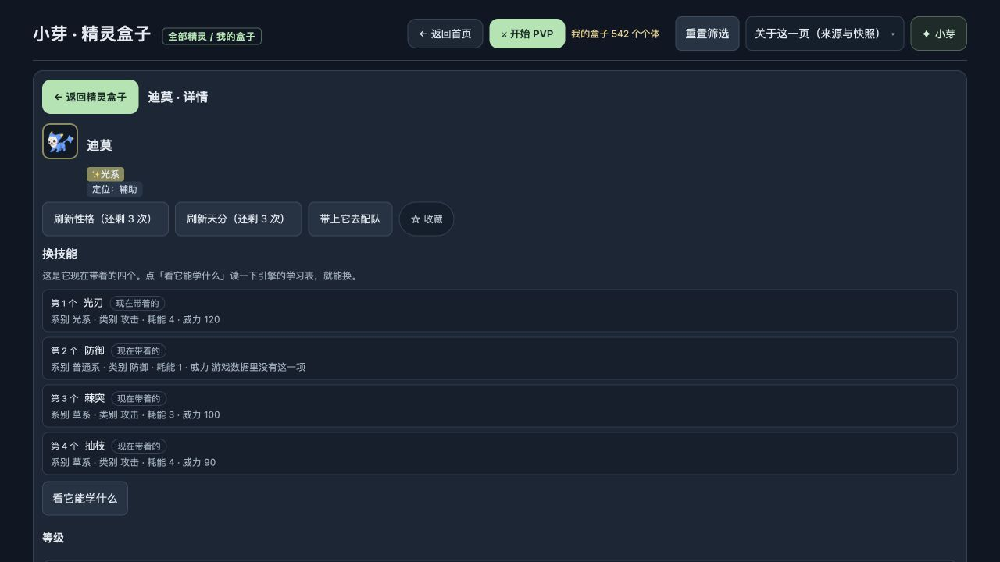
迪莫培养前的详情 · 点击查看原图
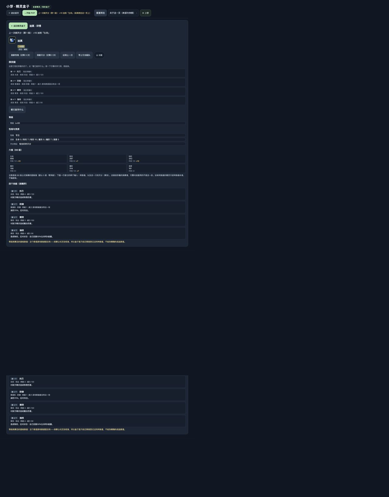
天分提示和面板改变，但天分文字没有同步 · 点击查看原图
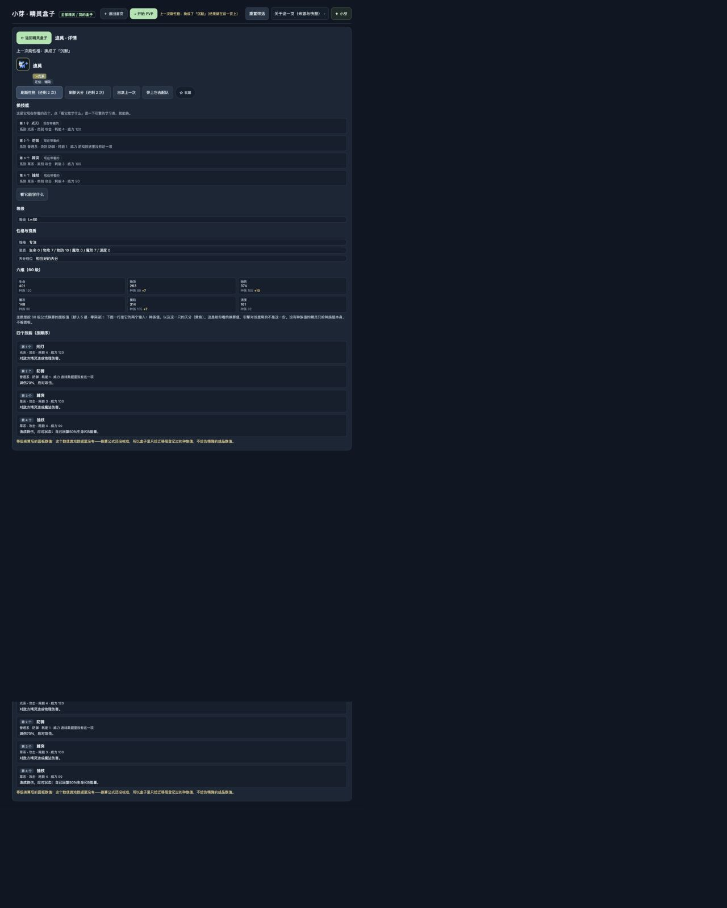
性格刷新后，顶部描述和面板来源不一致 · 点击查看原图
天分卡片问题需要分开看：dsh 的旧截图和接口字段确实说明存在缺失风险，但我这次在“我的精灵”列表能看到天分档位。因此不要按“所有卡片都没有天分”去修；应检查每种数据来源和新旧本地数据，补统一的展示规则。
技能编辑：把 53 个技能平铺给玩家，不够好用
资料全很有价值，但玩家的任务是“挑四个”，不是读一整页技能。详情里也重复出现当前四技能，信息位置分散。
建议： 顶部只放当前四槽，每槽给用途、代价和重要效果。下方提供按用途筛选、搜索、比较与替换。“小芽推荐”必须解释为什么保留或替换，并核验这只精灵能学。没有强度数据时可以做功能建议，不应宣称这是最强配招。资料缺失显示具体缺项，避免大量横杠。
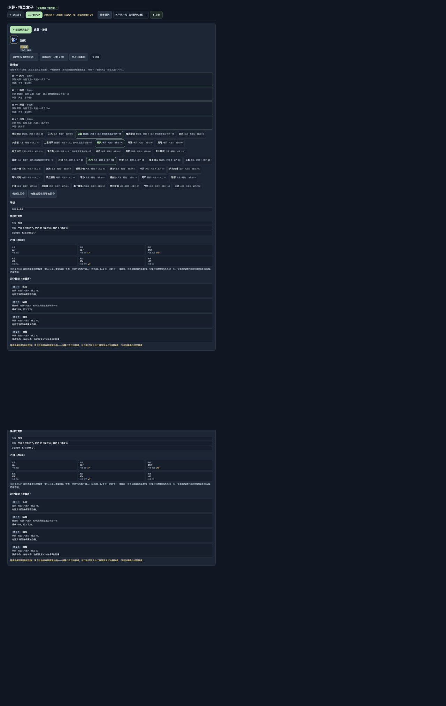
当前技能编辑器：可学技能平铺，四技能重复展示 · 点击查看原图
5. PVP：评估很多，但还没回答“我现在该怎么改”
选满六只的流程可以走通。问题是候选卡显示 Lv—、技能文字被截断、六个槽占用太大；几百只精灵逐页翻，不利于做选择。阵容评估更像内部指标列表，信息多但行动少。
建议： 六只缩成一排或两排紧凑卡，明确统一等级规则；点某只才展开技能详情。候选按“缺少抗性／需要回复／想围绕迪莫”等任务筛选，保留名称搜索。替换建议给一个明确方案、四个合法技能、获得什么、失去什么，提供“比较”“应用”“撤销”。已锁定的精灵不能被建议偷偷移走。
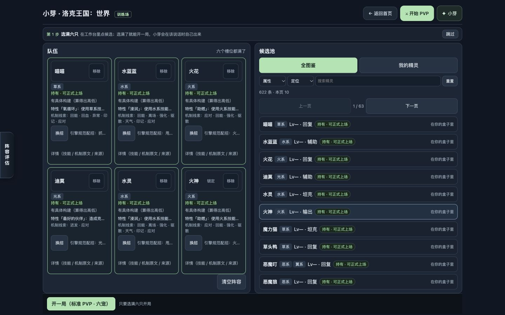
六只队伍与候选列表 · 点击查看原图
评估页有一处容易误导的“人话翻译”
代码把某类队伍的评估权重换算成“环境里大约每 7 局遇到 1 次”。但这次使用的是等权假设，页面其他地方又说环境缺数据。假设分配的权重不能变成真实玩家遇见的频率。 好懂的措辞不能以改变事实为代价。
建议： 第一屏只回答三件事：主要缺口、优先改哪一处、为什么值得改。等权评估写“在这些假设对手中”，真实环境占比只有拿到来源、样本和时间后才显示。未知的排名或胜率不填；但仍可以给有条件的结构建议。
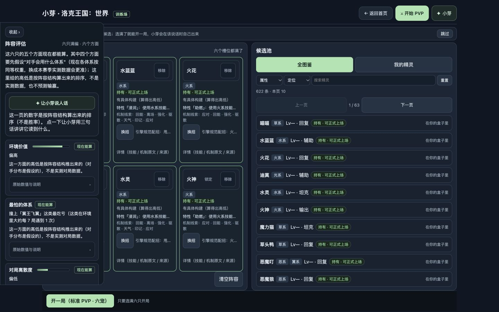
评估页面：重复指标、环境口径冲突 · 点击查看原图
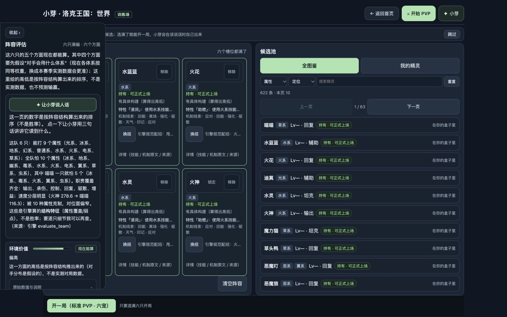
让小芽解释后，仍缺少清楚的具体修改方案 · 点击查看原图
6. 模拟器的可靠程度，需要重新命名
目前有些地方把“已有冻结配招”“可在训练场运行”和“真实游戏机制已核验”混在一起。按实际运行时分类，本次检查的 542 条可用记录全部被归为部分支持，没有一条达到完整支持；这不等于每条技能都不能算，而是每只还有未完成或未核验的关键内容。例如迪莫的特性尚不能完整结算，伤害技能也没有完成真实游戏核验。
建议： 分别告诉玩家：能否合法配队、哪些效果已实现、哪些结果只是模拟估算。队伍结构建议可以继续提供；涉及尚未实现的关键特性、胜率或精确伤害结论时，要限制承诺。不能为了可靠，把所有精灵都过滤掉；也不能为了数量，把“能跑”说成“已验证”。
对战技能卡的“预期伤害 180”在敌方防御后实际约 54，并不必然是计算错了：对手防御改变了结果。问题是卡片没有把“在什么条件下”讲清楚。可写“对手不防御时约……”，将条件与尚未核验说明紧邻数值。
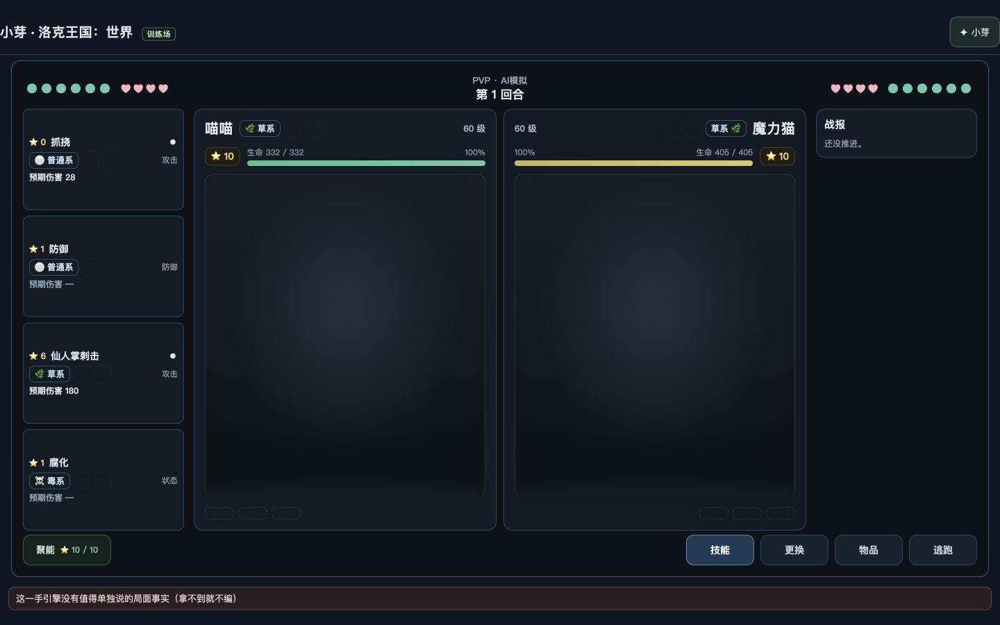
对战场景与缺失形象：数字很突出，但前提不突出 · 点击查看原图
这条对面试尤其重要：你可以准确说“我做了支持部分机制的训练模拟器，并用它约束教练的回答”，目前不能说“它已经准确复现真实洛手对战”。
7. UI 怎么改，才像同一个产品
首页有明亮的游戏氛围，进入功能页后却像深色调试工具。不是把所有颜色换一遍就能解决，应先统一阅读与操作结构。
首页目前的视觉风格 · 点击查看原图
小芽
桌面回答应控制在舒服的阅读宽度，正文约 15–16px、合理行距，不要一整行铺满屏幕。保留一个有辨识度的小芽头像，顶部显示它正在关注什么。默认答案“结论—理由—下一步”，详细依据折叠；军师、老师、陪练作为不同帮助方式，不必让玩家先理解模式系统。手机上输入框、模式和发送按钮需要稳定排列。加载中给真实状态、取消和重试，不把“回答通过检查”等内部过程作为主内容。
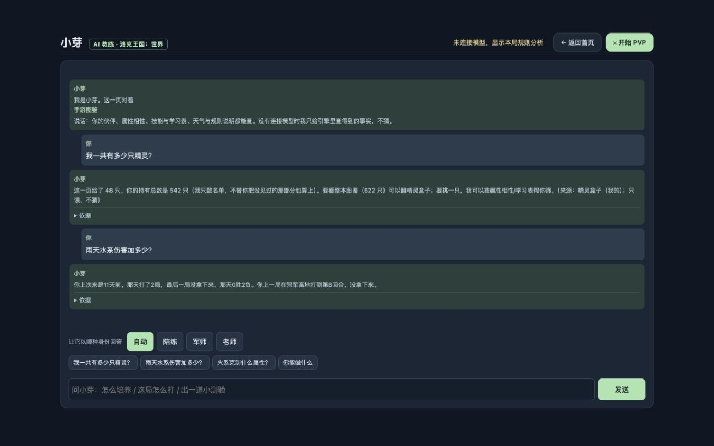
桌面小芽：文字密度与层次需要调整 · 点击查看原图
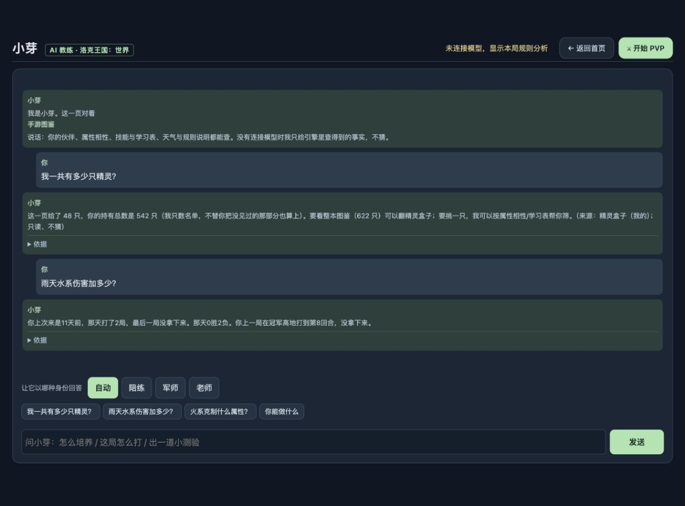
窄屏小芽：模式和操作区拥挤 · 点击查看原图
培养与精灵盒子
将“全部资料”作为主列表，以“已拥有／未拥有”作为筛选。不要用两套列表制造两套身份；物种、形态、玩家具体那一只要分清楚。卡片统一显示头像、名称、形态、系别、关键培养状态，缺失项不要用毫无解释的空值。详情按“身份与当前配置→培养对比→技能选择”组织，删重复区块。
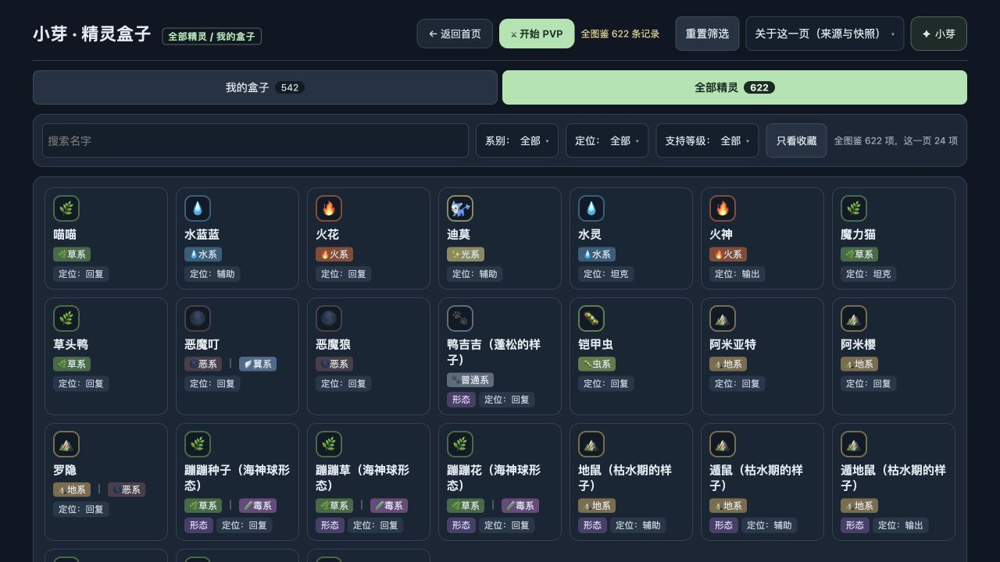
全部精灵资料列表 · 点击查看原图
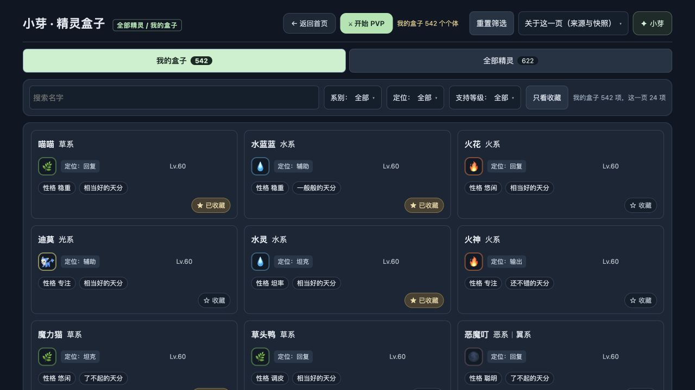
我的精灵列表：本次能看到天分档位 · 点击查看原图
PVP 与对战
队伍页突出“选六只、补缺口、比较、开局”，评估放右侧自然可见的位置，避免侧边竖排按钮像调试入口。战斗页缩小空白画框，保留生命、能量、双方动作与关键战报。先统一精灵基础形象，再补特效；主按钮突出技能和换人，物品与投降保持清晰但次要。
已有 530 只形象资料，不等于页面已经接入。建议保留原始资源，生成适合卡片的轻量预览、按需加载，先把有演示价值的精灵接好，确认失效时有可靠占位。不要一口气加载约 220MB，也不要删掉旧图后再补新图。
迪莫放技能后形象消失的问题，在当前版本本次测试中没有复现，形象仍在。dsh 的修复值得保留，但应补一个真实浏览器回归检查，防止以后再引入。
8. 对 dsh 当前问题的逐条判断
| dsh 提到的事项 | 我的处理建议 |
|---|
| 天分看不出来 | 修不同来源的字段与展示；本次并非全部缺失 |
| 多出旧的水泡壳记录 | 本次未复现；先追踪旧本地记录和迁移，不能直接清空玩家所有数据 |
| PVP 显示 Lv— | 修显示来源，并说明统一等级规则；不要页面硬填一个数字 |
| 评估不是人话 | 重做成可执行修改建议，同时纠正假设权重被说成真实频率 |
| 推荐不可靠替换 | 每个候选带合法配置和适用边界；不要仅凭“FULL_VERIFIED”标签过滤，因为该标签本身混淆含义 |
| AI 不会六只配队 | 建立完整任务：六只、每只四技能、保留条件、合法性检查、理由、应用和撤销 |
| 培养按钮假 | 修正为“局部生效、描述不同步、未贯通战斗”；建立统一培养记录 |
| 迪莫放技能丢图 | 当前本次未复现，补界面回归检查即可 |
| 旧 48 只体系与新资料冲突 | 确立版本与来源，保留缺口；不能把资料覆盖率当机制实现率 |
| 测试很多但页面仍错 | 增加跨页面、真实浏览器测试；已有红项先查判定依据，不能改答案把灯变绿 |
9. 旧计划保留什么，放弃什么
保留： 小芽不开聊天也有用；一个教练提供军师、老师、陪练三种帮助；从行动到复盘再到下一次练习；依据公开信息、不偷看对手；旧结果不能贴到新回合；模型通过工具查询而不是背数值；小芽与游戏界面分离。
调整： “600 只随便问”先落实为资料可查、合法选择可验证，而不是 600 只都能精确预测战斗；“三秒完成”拆成界面立即响应、资料查询快、复杂配队显示进度；复杂任务允许批量查询，不死守三次工具调用；当前本地 PVP 训练可以做，不能照搬旧计划“一切 PVP 都禁止”。真实线上对战接入仍另行处理。
暂缓： 同时推进三个模型、大规模微调、强化学习、追求更多指标和更多页面。先把真实失败用例修好，再用相同题目比较模型是否带来实际收益。旧计划里训练耗时、模型分数和历史阶段承诺，不作为今天已经实现的证据。原来的三天面试题约束也不是现在必须继续背负的开发期限。
10. 我建议 dsh 按这个顺序做
- 先修信任基础。 小芽联网与离线共用资料通路；杜绝旧游戏串入；统一培养记录；纠正“已核验”及环境频率措辞。做到资料回答正确、当前精灵正确、页面数值一致。
- 再做一个完整任务。 以迪莫为核心生成六只与四技能，能看理由、比较、应用、撤销。资料缺失要明示，不能假装最强队伍。先支持一个明确的稳健通用目标，再加入玩家偏好。
- 打通教学。 危险提醒有用且克制；复盘只选一个关键点；下一局出一个不同但相关的练习，检查玩家是否理解。
- 统一界面。 优先改小芽、培养详情、配队评估和缺图，不先重做首页。界面图文必须与真实数据保持一致。
- 证明能嵌入并准备面试演示。 做一个独立的简易宿主页面，几行接入小芽，能传当前对象与事件、显示建议、退出后清理。真实游戏接入尚需可用且获授权的接口；现有独立训练场不能替代这个证明。
第一轮完成标准：你拿同样的失败问题再问，答案正确；改一次性格天分，所有相关页面一致；六只配队结果完整合法；上一局的教训能在下一局验证；独立宿主可接入。通过这些标准再排后续工期，避免承诺“几天一定完成”。
11. 面试展示应该怎么讲
建议演示控制在约五分钟：打开迪莫→问一个具体培养问题→应用并验证新配置→生成保留迪莫的六只队伍→进入一个预置训练局面→小芽指出风险→玩家选择→复盘→换一个局面验证理解→展示独立宿主如何接入。
讲清楚三个事实：模型负责理解问题和选择工具；工具与模拟器负责返回可核验事实；界面让玩家接受、修改或拒绝建议。主动说明尚未核验的游戏机制，并用实测失败和修复证据解释取舍。这比声称“全精灵、全机制、全自动、都验证过”更有说服力。
12. 测试边界与本次留下的状态
这次在本地训练场建立了测试队伍、产生聊天和一局投降记录；刷新过迪莫天分与性格并执行撤回，刷新次数仍被消耗。没有修改真实游戏账号，也没有修改产品代码。服务在测试开始时未运行，我启动了本地服务；测试过程中模型连接状态发生变化，服务继续保留供你使用。
未完成的外部验证包括真实游戏接入、真实伤害与机制逐项校准、更多形态及旧浏览器数据迁移、真人连续练习效果、端到端延迟和费用统计。dsh 技术报告给出了具体处理方法与验收用例，不把这些缺口包装成已经完成。
来源：你给的 docs/roco/review-2026-09-28/README.md；docs/COACH-PLAN.md；docs/roadmap/ 下 LONG-TERM-PLAN、AGENT-FIRST-600-PLAN、MODEL-ROUTING-PLAN、CULTIVATION-PAGE-PLAN、INTERVIEW-TASK-CONTEXT、PROJECT-GOAL-CHECK；当前代码与本地实测。截图和原始证据与本报告放在同一目录。